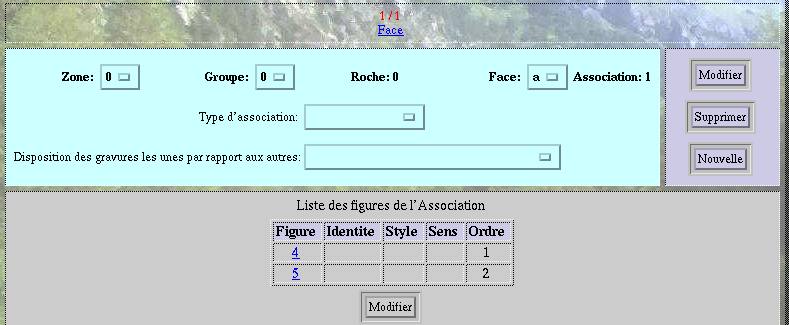
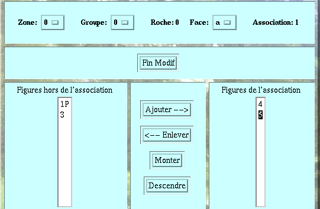

VI- LES ECRANS
7- L'écran Associations
Cet écran permet de saisir toutes les informations relatives aux associations.
 CHAMPS
OBLIGATOIRES:
Les seuls champs obligatoires pour la saisie sont
les champs Zone, Groupe, Roche, Face et Association qui constituent la
clef primaire de la table Association.
CHAMPS
OBLIGATOIRES:
Les seuls champs obligatoires pour la saisie sont
les champs Zone, Groupe, Roche, Face et Association qui constituent la
clef primaire de la table Association.
 LE
TABLEAU CONTENANT LA LISTE DES FIGURES DE L'ASSOCIATION est
rempli
grâce à un écran de modification des
éléments
de l'association. Pour se rendre directement sur une des figures de
l'association,
il suffit de cliquer sur le numéro de la figure ( ici 4
ou 5
).
LE
TABLEAU CONTENANT LA LISTE DES FIGURES DE L'ASSOCIATION est
rempli
grâce à un écran de modification des
éléments
de l'association. Pour se rendre directement sur une des figures de
l'association,
il suffit de cliquer sur le numéro de la figure ( ici 4
ou 5
).

 L'ECRAN
DE MODIFICATION DE LA LISTE DES FIGURES COMPOSANT L'ASSOCIATION:
lorsque l'on a cliqué sur le bouton MODIFIER, on aboutit alors
sur
l'écran suivant. La liste des figures qui se trouvent hors de
l'association
est générée automatiquement en fonction des
figures
présentes sur la roche.
L'ECRAN
DE MODIFICATION DE LA LISTE DES FIGURES COMPOSANT L'ASSOCIATION:
lorsque l'on a cliqué sur le bouton MODIFIER, on aboutit alors
sur
l'écran suivant. La liste des figures qui se trouvent hors de
l'association
est générée automatiquement en fonction des
figures
présentes sur la roche.

Pour ajouter une ou plusieures figures à l'association:
Sélectionner les items à l'aide de la souris.
Cliquer sur le bouton Ajouter -->.Sélectionner les items à l'aide de la souris.
Cliquer sur le bouton Enlever <--.Sélectionner une ou plusieures figures de l'association contigües ou non.
Cliquer sur Monter pour faire monter ces figures d'un rang.
Cliquer sur Descendre pour faire descendre ces figures d'un rang.